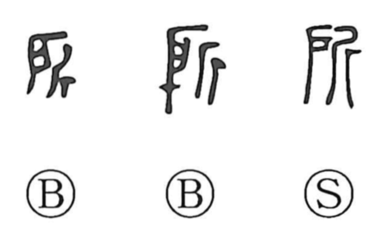

Explanation
所 is a compound graph of 戶 and 斤. 戶 depicts the single-leaf door of a household altar (in contrast to the double-leaf gate 門), while 斤 is an adze. The character pictures the altar door secured and protected with the adze; within that door a seat was prepared for the spirit of the deceased or a deity. Bronze inscriptions preserve this sacral sense in phrases such as 帝所 and 雷公之所, meaning the consecrated place of a god or an ancestral spirit. From this core meaning of a sacred ‘place,’ the word broadened to denote the ruler’s palace—the imperial dwelling—and then more generally any place or social position. By association with the on-reading of 許, it also developed the adverbial sense ‘only’ (bakari), and in classical usage it appears as a contraction of 之於, functioning as a relative or locative marker in emphatic constructions.